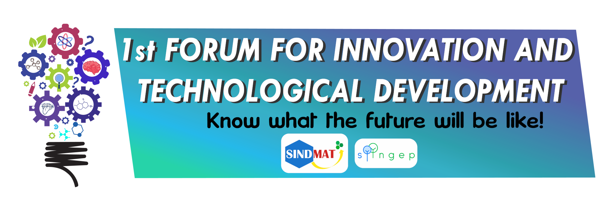

1er Foro de Innovación y Desarrollo Tecnológico
“Conoce de qué estará hecho el futuro”
El
1er Foro de Innovación y Desarrollo Tecnológico
es un espacio que da a conocer los diversos trabajos relacionados con novedades en productos y procesos que apoyan el desarrollo sostenible del planeta y la gestión tecnológica de los procesos, desarrollados por estudiantes vinculados a semilleros de investigación de la UFPS.
El foro hace parte de la iniciativa de los semilleros
SINDMAT
(Semillero en Innovación y Desarrollo de Materiales) y
SIINGEP
(Semillero de Investigación en Innovación y Gestión de Procesos) bajo la orientación de la Ing. Gaudy Carolina Prada Botia y la Ing. Martha Sofia Orjuela Abril, directoras de los semilleros. Se encuentra establecido como parte del plan de acción del segundo semestre de 2018. Se desarrolla como parte del compromiso con la innovación, pilar de los semilleros mencionados.
Los ejes temáticos corresponden a los establecidos para la V Semana Internacional de Ciencia, Tecnología e Innovación. Puedes consultarlos
aquí.
Se invita a todos los semilleros de la UFPS a participar del
1er Foro de Innovación y Desarrollo Tecnológico
, las fechas de inscripción al evento están sujetas al cronograma establecido por la
V Semana Internacional de Ciencia, Tecnología e Innovación.
Para inscribirse, accede al siguiente link:
https://goo.gl/n1zDVi
y completa el formulario.
Ten en cuenta utilizar el formato del evento, el cual puedes descargar
aquí.
Las diapositivas para la presentación de los proyectos las puedes descargar
aquí.
Conferencias
Se cuenta con la aprobación por parte de dos invitados, conocedores del tema de innovación, quienes gentilmente realizarán las conferencias magistrales del evento.
Los conferencistas invitados son:
1. José Luis Ramírez Ospina.
Magíster en Prospectiva – Universidad del Externado, Trainer en PNL, Coach ICC, Consultor en Innovación, Prospectiva y mentor en emprendimiento.
2. Nata Bernal.
Diseñadora, Influencer, Empresaria Cucuteña. (Conferencia de 1 hora)
Presentación de ponencias
Se presentarán las ponencias orales y tipo poster por parte de los semilleros participantes en el foro.
Exposición de Diseño de Productos
Se presentará una exposición de diseño de productos, resultado de la investigación y creatividad de estudiantes del Programa de Ingeniería Industrial. Esta actividad, está bajo la orientación del Ing. Juan Carlos Bermúdez.